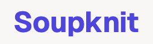

The Beginning
Soupknit started as a small idea. There were four of us, all developers, and we were constantly frustrated by how tedious building machine learning models could be. Even for experienced developers, the process of setting up data pipelines, training models, and tuning parameters felt repetitive and unnecessarily complicated. We wanted to simplify things.
At first, we thought small. The idea was to build a Jupyter Notebook extension—just something that would streamline the most time-consuming parts of building machine learning models. The goal was to help developers focus on solving problems instead of getting bogged down by the details.
But as we started working on the project, we began to see the bigger picture. It became clear that this wasn’t just about making life easier for developers. Why not make machine learning accessible to anyone, regardless of their technical background? That’s when Soupknit shifted from a developer tool to something much more ambitious: a no-code platform where anyone could upload data, click a few buttons, and have a machine learning model ready to go.
The Pivot to No-Code
After deciding to go all-in on the no-code vision, we did some research. We found that we weren’t the first to think of this. Companies like obviously.ai and Graphite Note were already offering similar tools that made machine learning more accessible. At first, we questioned whether there was room for us in this space, but we soon realized that we had our own unique perspective to bring to the table.
While these platforms were doing great work, we saw gaps in the user experience. Many of the existing tools either didn’t offer enough flexibility or required a level of technical understanding that still left non-developers struggling. We believed we could create a better balance—offering a simple, user-friendly experience while still giving users enough control over the model-building process.
Building Soupknit: The Development Journey
Turning this vision into reality was no easy task. We had to rethink how machine learning pipelines worked, break them down into manageable chunks, and automate as much as possible. But as any developer knows, simplifying complex processes is often the hardest part.
Designing the Workflow
The first challenge was designing a workflow that would allow users to upload their data and generate machine learning models without getting overwhelmed. We broke the process down into clear steps: data upload, data cleaning, feature selection, model training, and evaluation. These are all tasks that, under the hood, require a lot of technical know-how. Our job was to hide that complexity without sacrificing the power of machine learning.
For instance, if someone uploads a dataset, Soupknit automatically detects if it’s a classification or regression problem, fills in missing data, and selects the best model. All of this happens behind the scenes so the user doesn’t have to think about it. But for those who want more control, we added options to customize the models, tweak hyperparameters, and get more hands-on with the process.
The Tech Stack
As the lead developer, I was responsible for designing the backend architecture and creating the no-code logic. We used Fastify for the web server because it’s lightweight and scalable, which gave us the flexibility we needed. Since we were building for both developers and non-developers, we made a unique choice: we used React not just for the frontend, but also for the backend. This allowed us to reuse components across the board, simplifying development and ensuring that the platform remained responsive.
On the backend, we leveraged Python’s scikit-learn library for all the machine learning heavy lifting. When a user uploads their data, the platform spawns Python processes to preprocess the data, create pipelines, and train models. Scikit-learn’s versatility made it the perfect choice for Soupknit’s no-code engine, allowing us to offer a range of models and pipelines without overwhelming users with too many decisions.
Building for Everyone
The technical side was only half the battle. To make the platform truly no-code, we needed to focus heavily on the user experience. Our goal was to make sure that anyone, regardless of their technical background, could use Soupknit without feeling intimidated. We spent a lot of time refining the user interface, adding helpful tips and explanations at each step, and making sure everything felt as intuitive as possible.
We also relied heavily on feedback from early testers. Their input helped us identify what worked and what didn’t, guiding us as we iterated on the product. Listening to users was one of the most important parts of the development process, and it helped shape Soupknit into a platform that truly met people’s needs.
Recognition and Excitement
One of the most rewarding moments in Soupknit’s journey was receiving recognition from Google. After demonstrating the potential of our platform, Google awarded us $2,000 in credits to host Soupknit on their cloud infrastructure. It was a big milestone, not just because of the financial support, but because it validated the work we had put in. Google’s backing gave us the boost we needed to host the platform at scale, and it felt like the first real sign that Soupknit could go somewhere.
Lessons Learned Along the Way
As with any project, building Soupknit came with its fair share of lessons. Looking back, a few things stand out:
- The Importance of Market Research
While we knew there were other no-code machine learning platforms out there, we didn’t fully appreciate how competitive the space was until we were well into development. We learned that diving deeper into the competitive landscape earlier might have helped us shape our product more effectively. That said, we’re proud of how we differentiated Soupknit by focusing on user experience and flexibility.
- Balancing Simplicity with Flexibility
The biggest challenge was finding the right balance between making Soupknit easy to use and giving users enough control. We didn’t want it to be a black-box solution where users had no insight into what was happening. Striking this balance required constant iteration and refinement, but ultimately, it’s what made the platform work.
- User Feedback is Invaluable
The feedback we received from early testers played a crucial role in shaping the final product. Without their insights, we wouldn’t have been able to build something that truly met the needs of our target audience. This reinforced how important it is to get real users involved as early as possible in the development process.
Deciding Not to Monetize
As Soupknit grew and evolved into a fully functional product, we had to decide whether to monetize the platform. Given the success of the project and the recognition we received from Google, it seemed like a logical next step to turn it into a commercial product.
But after much discussion, the four of us made the decision not to monetize Soupknit. We had always envisioned Soupknit as a tool to democratize machine learning, and putting it behind a paywall didn’t feel right. Additionally, the market for no-code machine learning platforms was already competitive, and we didn’t want to compete just for the sake of making money.
Instead, we chose to keep Soupknit free and open to anyone who wanted to use it. This decision gave us the freedom to move on to new ideas without the pressure of managing a commercial product, while still making a positive impact by offering Soupknit as a resource for anyone interested in machine learning.
Moving Forward: What’s Next?
With Soupknit completed, we’re now focused on a new project. While it’s still in the early stages, we’re excited about the potential and eager to apply what we’ve learned from Soupknit to this next venture. Building Soupknit was an incredible experience, and it gave us a solid foundation in everything from product development to user experience design. We’re ready for the next challenge, and we can’t wait to see where it takes us.
Final Thoughts
Building Soupknit has been one of the most rewarding experiences of my career. What started as a simple idea grew into a fully-fledged platform that helped make machine learning accessible to more people. Along the way, we learned valuable lessons about the balance between automation and control, the importance of user feedback, and the power of collaboration.
While we decided not to monetize Soupknit, the journey was worth every minute. It’s taught us not only how to build products but how to work together as a team and bring an idea to life. As we move forward with our next project, I’m excited about the future and ready to see what we can build next.
Code
At long last, we’ve made the repository public. The website is available to check out at SoupKnit.com and the code open-sourced on Github.